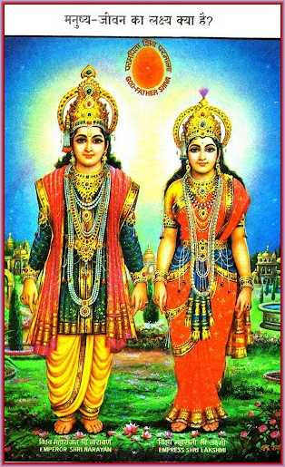
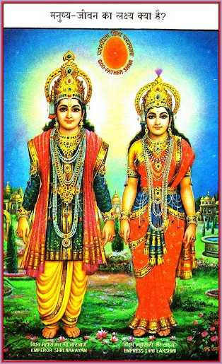

The True Religion and the Gita-Sermonizer
 

On the fifth day, the course reveals the true religion as Aadi Sanatan Devi-Devata Dharma, founded by God Himself through Prajapita Brahma in Sangamyug. This religion is based on the teachings of The Gita, which is the scripture of this religion.
The lesson explains that The Gita is not just a book but a living scripture, and the sermons in it are given by God Himself. The Gita-Sermonizer is none other than God, who descends into the world to impart divine knowledge and guide souls towards righteousness.
The true religion is described as the religion of deities, and its followers are encouraged to acquire divine qualities and become like deities. The religion is based on the principles of peace, love, and truth, and it is through the practice of these virtues that souls can attain liberation and beatitude.
The day concludes with an emphasis on the importance of understanding the true religion and its teachings. By following the path of righteousness and acquiring divine qualities, souls can establish a deep connection with God and experience the true joy of spiritual living.